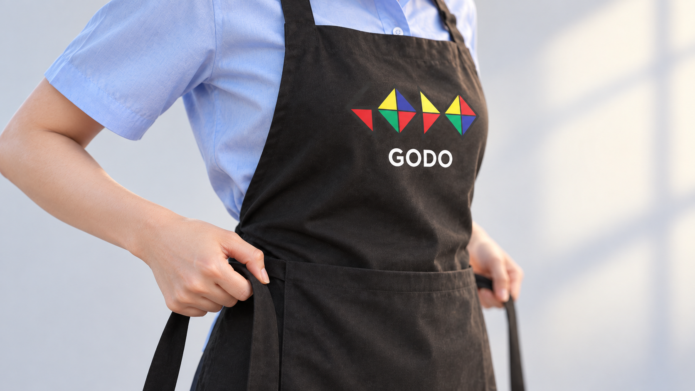
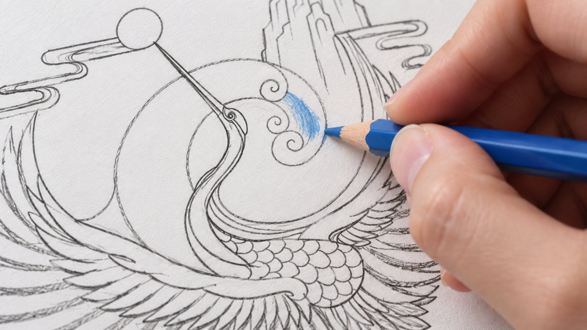
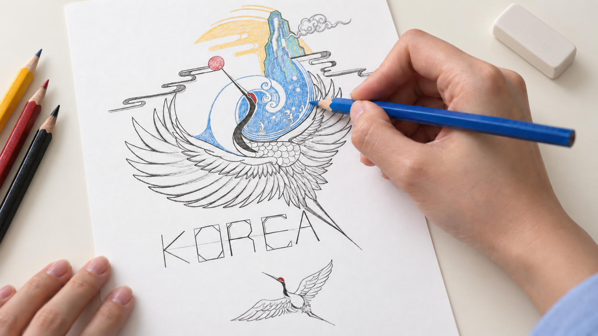
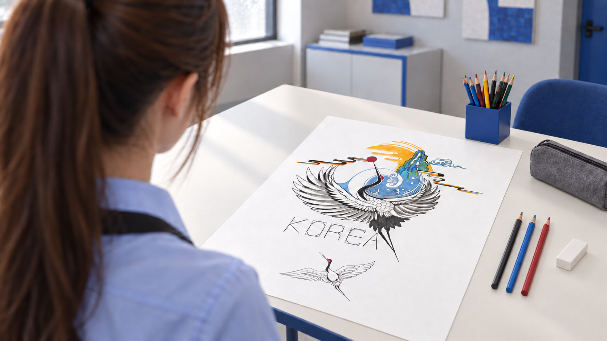
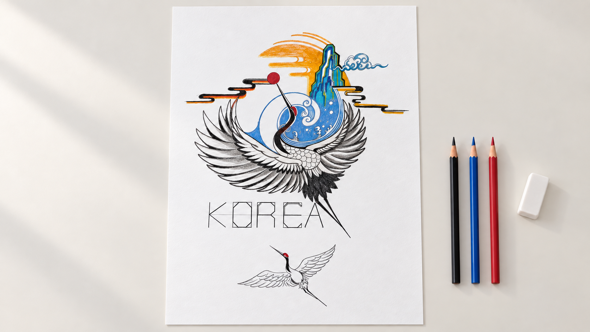

01 · 00–02초인물 클로즈업우측 상단을 바라보는 원본 인물 클로즈업. 눈과 피부에 초점을 두고 시선·표정 변화는 작게 유지합니다.촬영: 인물 측면 초근접 · 고정에 가까운 카메라
02 · 02–04초앞치마를 입으며 준비사용자가 확정한 손 클로즈업. 양옆 허리끈을 잡고 천천히 뒤로 가져가며 앞치마를 입습니다. 손과 끈에 초점을 두고 로고와 GODO를 함께 보여줍니다.촬영: 허리 높이의 사선 클로즈업 · 가까운 손과 허리끈에 초점
03 · 04–06초연필로 첫 선흑연 연필 끝과 종이의 접촉을 근접 촬영합니다. 학의 깃털 윤곽에 짧은 선을 더하며 그림을 시작합니다.촬영: 종이와 연필 끝 매크로 · 접점에 고정 초점
04 · 06–08초첫 파란색 채색대부분 색이 없는 밑그림의 파도에 파란 색연필로 첫 색을 넣습니다. 심과 채색 영역의 색상을 맞춥니다.촬영: 파도 곡선과 연필 끝 초근접
05 · 08–10초색이 차오르는 과정조금 더 넓은 사선 구도로 부분 채색 상태를 보여줍니다. 작품의 방향과 KOREA 배치를 유지하며 완성으로 이어갑니다.촬영: 높은 사선 구도 · 손과 작품에 초점
시작 프레임 → 도착 프레임 · 하나의 카메라 이동06 · 10–12초완성작으로 다가가는 엔딩어깨 너머로 완성작을 바라보는 장면에서 시작합니다. 카메라가 앞으로 다가가며 위로 올라가, 작품을 수직으로 내려다보는 구도로 끝납니다. 추가로 그리는 동작은 없습니다.촬영: 어깨 너머 사선 → 전진·상승하며 수직 탑뷰